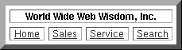

Table of Contents
Table of Contents  Next Section
Table of Contents
Next Section
Table of Contents  Previous Section
Previous Section
Suppose you want to display a navigational control like the one shown in Figure 31 at the bottom of each page of your application.

Figure 31. A Navigational Control
<HTML>Thirteen lines of HTML code define the HTML table that constitutes the navigational control. You could copy these lines into each of the application's pages or use a graphical HTML editor to assemble the table wherever you need one. But as application size increases, these approaches becomes less practical. And obviously, when a decision is made to replace the navigational table with an active image, you must update this code in each page. Duplicating HTML code across pages is a recipe for irritation and long hours of tedium.
<HEAD>
<TITLE>World Wide Web Wisdom, Inc.</TITLE>
</HEAD>
<BODY>
Please come visit us again!
<!-- start of navigation control -->
<CENTER>
<TABLE BORDER = 7 CELLPADDING = 0 CELLSPACING = 5>
<TR ALIGN = center>
<TH COLSPAN = 4> World Wide Web Wisdom, Inc.</TH>
</TR>
<TR ALIGN = center>
<TD><A HREF = "http://www.wwww.com/home.html"> Home <a></TD>
<TD><A HREF = "http://www.wwww.com/sales.html"> Sales <a></TD>
<TD><A HREF = "http://www.wwww.com/service.html"> Service <a></TD>
<TD><A HREF = "http://www.wwww.com/search.html"> Search <a></TD>
</TR>
</TABLE>
</CENTER>
<!-- end of navigation control -->
</BODY>
</HTML>
With a reusable component, you could define the same page like this:
<HTML>The thirteen lines are reduced to one, which positions the WebObject named NAVCONTROL. The declarations file for this page binds the WebObject named NAVCONTROL to the component named NavigationControl:
<HEAD>
<TITLE>World Wide Web Wisdom, Inc.</TITLE>
</HEAD>
<BODY>
Please come visit us again!
<!-- start of navigation control -->
<WEBOBJECT NAME="NAVCONTROL"></WEBOBJECT>
<!-- end of navigation control -->
</BODY>
</HTML>
NAVCONTROL: NavigationControl {};
All of the application's pages would have entries identical to these in their template and declarations files. NavigationControl is a component that's defined once, for the use of all of the application's pages. Its definition is found in the directory NavigationControl.wo in the file NavigationControl.html and contains the HTML for the table:
<CENTER>Since NavigationControl defines a group of static elements, no declaration or code file is needed. However, a reusable component could just as well be associated with complex, dynamically determined behavior, as defined in an associated code file.
<TABLE BORDER = 7 CELLPADDING = 0 CELLSPACING = 5>
<TR ALIGN = center>
<TH COLSPAN = 4> World Wide Web Wisdom, Inc.</TH>
</TR>
<TR ALIGN = center>
<TD><A HREF = "http://www.wwww.com/home.html"> Home <a></TD>
<TD><A HREF = "http://www.wwww.com/sales.html"> Sales <a></TD>
<TD><A HREF = "http://www.wwww.com/service.html"> Service <a></TD>
<TD><A HREF = "http://www.wwww.com/search.html"> Search <a></TD>
</TR>
</TABLE>
</CENTER>
Now, to change the navigational control on all of the pages in this application, you simply change the NavigationControl component. What's more, since reusable components can be shared by multiple applications, the World Wide Web Wisdom company could change the look of the navigational controls in all of its applications by changing this one component.
If your application's pages are highly structured, reusable components could be the prevailing feature of each page:
<HTML>The corresponding declarations file might look like this:
<HEAD>
<TITLE>World Wide Web Wisdom, Inc.</TITLE>
</HEAD>
<BODY>
<WEBOBJECT NAME="HEADER"></WEBOBJECT>
<WEBOBJECT NAME="PRODUCTDESCRIPTION"></WEBOBJECT>
<WEBOBJECT NAME="NAVCONTROL"></WEBOBJECT>
<WEBOBJECT NAME="FOOTER"></WEBOBJECT>
</BODY>
</HTML>
HEADER: CorporateHeader {};
PRODUCTDESCRIPTION: ProductTable {productCode = "WWWW0314"};
NAVCONTROL: NavigationControl {};
FOOTER: Footer {type = "catalogFooter"};
Notice that some of these components above take arguments-that is, they are parameterized. For example, the ProductTable component's productCode attribute is set to a particular product identifier, presumably to display a description of that particular product. The combination of reusability and customizability is particularly powerful, as you'll see in the next section.
Table of Contents Next Section